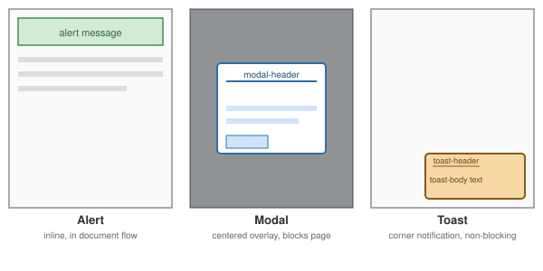

Feedback Components
|
This content was generated with the assistance of AI and should be verified against the official documentation before being relied on in production. |
Alerts, modals, and toasts all communicate something to the user, but they differ in how intrusive they are and how long they stay visible. Choosing between them is mostly a question of urgency and whether the user must react before continuing:

-
An alert sits inline, in the normal document flow, near what it refers to — a form error, a page-level notice. It never blocks the rest of the page.
-
A modal interrupts everything else: it dims the page behind it and (by default) traps focus until the user explicitly closes it or completes the action it demands.
-
A toast is the least intrusive: a small, temporary notification, usually in a corner, that appears and disappears without ever blocking the user from doing anything else.
Alerts
.alert plus a contextual color modifier (primary, secondary, success, danger, warning, info,
light, dark) renders a colored banner:
<div class="alert alert-success" role="alert">
Your changes have been saved.
</div>
<div class="alert alert-danger" role="alert">
<strong>Something went wrong.</strong> Please check the form below and try again.
</div>role="alert" marks the element as an ARIA live region so assistive technology announces it as soon as it
appears in the DOM, without the user needing to be focused on it — important since an alert is often injected
dynamically after a form submission rather than present on initial page load.
Dismissible alerts
Adding .alert-dismissible plus a close <button> makes an alert closable by the user; the fade transition and
click handling are provided by Bootstrap’s Alert JavaScript component, so the JS bundle must be loaded for the
button to actually work:
<div class="alert alert-warning alert-dismissible fade show" role="alert">
This action cannot be undone.
<button type="button" class="btn-close" data-bs-dismiss="alert" aria-label="Close"></button>
</div>.fade and .show together produce the closing fade-out transition; data-bs-dismiss="alert" is what wires
the button’s click to actually removing the alert, and .btn-close supplies the small "x" icon with a
built-in, theme-aware aria-label fallback (overridden here to "Close", which is good practice regardless).
Alerts with links or extra content
An alert can hold headings, additional paragraphs, and links; .alert-link colors a link to match the alert’s
own contextual color rather than the browser default blue, so it doesn’t clash:
<div class="alert alert-primary" role="alert">
<h4 class="alert-heading">Well done!</h4>
<p>You successfully read this important alert message.</p>
<hr>
<p class="mb-0">
Whenever you need to, be sure to use margin utilities to keep things nice and tidy.
<a href="#" class="alert-link">Learn more</a>.
</p>
</div>Modals
A modal is built from a fixed outer .modal, a sizing/positioning wrapper .modal-dialog, and the visible
.modal-content, which itself splits into header/body/footer — the same three-region pattern as
cards:
<button type="button" class="btn btn-primary" data-bs-toggle="modal" data-bs-target="#confirm-modal">
Delete item
</button>
<div class="modal fade" id="confirm-modal" tabindex="-1" aria-labelledby="confirm-modal-label" aria-hidden="true">
<div class="modal-dialog">
<div class="modal-content">
<div class="modal-header">
<h1 class="modal-title fs-5" id="confirm-modal-label">Confirm deletion</h1>
<button type="button" class="btn-close" data-bs-dismiss="modal" aria-label="Close"></button>
</div>
<div class="modal-body">
Are you sure you want to delete this item? This cannot be undone.
</div>
<div class="modal-footer">
<button type="button" class="btn btn-secondary" data-bs-dismiss="modal">Cancel</button>
<button type="button" class="btn btn-danger">Delete</button>
</div>
</div>
</div>
</div>data-bs-toggle="modal" and data-bs-target="#confirm-modal" on the trigger button open the modal without any
custom JavaScript; aria-labelledby pointing at the header’s title id is what makes the modal intelligible to
a screen reader once it opens. aria-hidden="true" on the closed .modal itself keeps its hidden content out
of the accessibility tree; Bootstrap’s JavaScript removes that attribute (rather than flipping it to false)
and adds aria-modal="true" plus role="dialog" once the modal is shown. Both attributes are part of the
standard markup, not optional extras — see Accessibility for what this
does and does not protect a screen-reader user from.
Sizing and scrolling
.modal-dialog accepts size modifiers and a vertical-centering modifier, and .modal-dialog-scrollable scrolls
just the .modal-body internally instead of the whole page when the content is taller than the viewport:
<div class="modal-dialog modal-lg modal-dialog-centered modal-dialog-scrollable">
...
</div>Available sizes are .modal-sm, the unmodified default, .modal-lg, .modal-xl, and .modal-fullscreen
(which can also be applied only below a breakpoint, e.g. .modal-fullscreen-sm-down).
Static backdrop
By default, clicking outside a modal (on its dimmed backdrop) closes it, as does pressing the Esc key. Setting
data-bs-backdrop="static" disables the click-outside close, keeping the modal open until the user explicitly
uses a close control — useful when the modal represents an action that must not be silently abandoned:
<div class="modal" data-bs-backdrop="static" data-bs-keyboard="false" tabindex="-1">
...
</div>data-bs-keyboard="false" additionally disables the Esc-key shortcut, though the modal’s own explicit close
button(s) should always remain available regardless.
Modals rely on the same JavaScript component API described on
Interactive Components — new bootstrap.Modal(...) — for
opening or closing one programmatically rather than through data-bs-* attributes alone.
Toasts
A toast is a small, auto-hiding notification, typically stacked inside a fixed-position .toast-container so
multiple toasts queue in a corner of the viewport rather than overlapping:
<div class="toast-container position-fixed bottom-0 end-0 p-3">
<div id="save-toast" class="toast" role="status" aria-live="polite" aria-atomic="true">
<div class="toast-header">
<strong class="me-auto">Notification</strong>
<small class="text-body-secondary">just now</small>
<button type="button" class="btn-close" data-bs-dismiss="toast" aria-label="Close"></button>
</div>
<div class="toast-body">
Your file has been saved.
</div>
</div>
</div>role="status" and aria-live="polite" (rather than role="alert"/aria-live="assertive", used for alerts)
reflect a toast’s lower urgency: it is announced to a screen reader without interrupting whatever the user is
currently doing. aria-atomic="true" ensures the entire toast content is re-read as one unit rather than only
the piece of text that changed.
Unlike alerts and modals, a toast is not visible by default — it must be shown from JavaScript, and by default hides itself again after a delay:
const toastEl = document.getElementById("save-toast");
const toast = new bootstrap.Toast(toastEl, { delay: 4000 });
toast.show();Passing { autohide: false } instead keeps a toast visible until the user dismisses it manually with its close
button, which is appropriate for a message the user must actually read (an error) rather than a fire-and-forget
confirmation.
Component events and their order
All three components are driven by JavaScript classes that fire cancelable "before" events and non-cancelable "after"
events, named <action>.bs.<component>. The events are dispatched on the component’s root element, so listeners are
attached to the .modal, .toast or .alert element itself:
| Component | Events | Notes |
|---|---|---|
Modal |
|
|
Toast |
|
|
Alert |
|
Closing removes the alert element from the DOM, so a new alert is created for the next message. |
The event names must be listened to with addEventListener (or the Bootstrap plugin’s own EventHandler); they are
ordinary DOM events, and no jQuery is involved.
Worked example: the Taskboard delete flow
Deleting a task combines all three components. A modal asks for confirmation. While the delete request is running, the modal must not be dismissable, otherwise the user could believe the delete was cancelled. On success a toast confirms the deletion; on failure an alert explains what went wrong. The page contains the three containers from the start:
<div id="alert-region" class="container mt-3"></div>
<div class="toast-container position-fixed bottom-0 end-0 p-3">
<div id="undo-toast" class="toast" role="status" aria-live="polite" aria-atomic="true">
<div class="toast-body"></div>
</div>
</div>
<div class="modal fade" id="confirm-delete" tabindex="-1" aria-labelledby="cd-title" aria-hidden="true">
<div class="modal-dialog modal-dialog-centered">
<div class="modal-content">
<div class="modal-header">
<h1 class="modal-title fs-5" id="cd-title">Delete task?</h1>
<button type="button" class="btn-close" data-bs-dismiss="modal" aria-label="Close"></button>
</div>
<div class="modal-body">This cannot be undone.</div>
<div class="modal-footer">
<button type="button" class="btn btn-outline-secondary" data-bs-dismiss="modal">Cancel</button>
<button type="button" class="btn btn-danger" id="confirm-btn">Delete</button>
</div>
</div>
</div>
</div>// Depends on the global `bootstrap` object (bootstrap.bundle.js).
function createFeedback(root, bootstrap) {
const alerts = root.querySelector("#alert-region");
const toastEl = root.querySelector("#undo-toast");
const toastBody = toastEl.querySelector(".toast-body");
const dialogEl = root.querySelector("#confirm-delete");
const dialog = bootstrap.Modal.getOrCreateInstance(dialogEl);
const toast = bootstrap.Toast.getOrCreateInstance(toastEl, { delay: 5000 });
let busy = false;
// The region exists in the page from the start; only its content changes.
function showError(message) {
const el = root.ownerDocument.createElement("div");
el.className = "alert alert-danger alert-dismissible fade show";
el.setAttribute("role", "alert");
el.innerHTML = '<span></span><button type="button" class="btn-close" data-bs-dismiss="alert" aria-label="Close"></button>';
el.firstChild.textContent = message;
alerts.append(el);
return el;
}
// A busy dialog must not be closed with Esc or a backdrop click.
dialogEl.addEventListener("hide.bs.modal", (event) => {
if (busy) event.preventDefault();
});
async function confirmDelete(deleteRequest, taskTitle) {
busy = true;
try {
await deleteRequest();
busy = false;
dialog.hide();
toastBody.textContent = `Deleted "${taskTitle}".`;
toast.show();
} catch (error) {
busy = false;
dialog.hide();
showError(`Could not delete "${taskTitle}". Try again.`);
}
}
return { confirmDelete, showError, dialog, toast };
}This code was run against Bootstrap 5.3.3 in a DOM test (jsdom, without the stylesheet, so transitions complete immediately). The results were:
-
A
hide()call while the delete request was pending firedhide.bs.modal, was cancelled by the listener, and the modal stayed open (itsshowclass remained). The event therefore appears twice in the log: once for the blocked attempt and once for the real close. -
When the request resolved, the modal closed and the toast element received the classes
toast fade showwith the textDeleted "Write docs".. The recorded order wasshow.bs.modal,shown.bs.modal,hide.bs.modal(blocked),hide.bs.modal(the real close),show.bs.toast,shown.bs.toast,hidden.bs.modal; the toast starts to show while the modal is still fading out. -
When the request rejected, an alert with the error message was appended to the region; clicking its close button fired
close.bs.alertthenclosed.bs.alertand removed the element, leaving no alert in the region.
The real network request and the toast’s auto-hide timer (the default delay is 5000 ms) were not exercised.
Design decisions in the example:
-
Texts are assigned with
textContent. The task title came from user data; putting it throughinnerHTMLwould turn a title such as<img onerror=...>into markup. Only the static skeleton of the alert usesinnerHTML. -
Live regions are in place before they are used. The toast already exists in the page with
role="status", and only its text changes. The error alert is created on demand, so it carriesrole="alert"and is inserted already containing its text, as one unit; that is announced by current screen readers, but a status message that changes repeatedly is more reliable as a persistentrole="status"container whose text is replaced. -
The dialog’s cancel paths stay available when idle. The
busyflag blocks closing only during the request; Cancel, the close button, Esc and the backdrop work as normal otherwise. -
The toast reports, it does not ask. An "Undo" button inside it is possible, but a toast disappears on a timer, so anything the user must act on belongs in the modal or in an alert.
Choosing the right one
| Component | Blocks page? | Auto-dismisses? | Typical use |
|---|---|---|---|
Alert |
No |
Only if built explicitly |
Form errors, page-level notices tied to specific content |
Modal |
Yes |
No |
Confirming a destructive action, a focused task that must complete or be cancelled |
Toast |
No |
Yes, by default |
"Saved", "Copied to clipboard" — transient confirmations the user doesn’t need to act on |
See the official Alerts docs, the official Modal docs, and the official Toasts docs for the complete option and event reference.